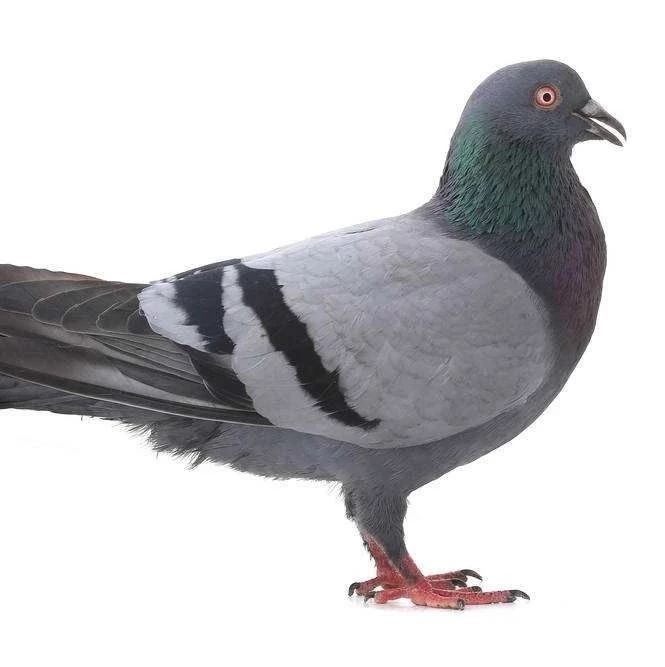

咕咕咕~鸽了这么久，让我来立一个Flag吧~~
首先非常抱歉由于一些个人原因已经停更了这么久~~~
非常抱歉抱歉抱歉（重要的事情说三遍 §(*￣▽￣*)§
其次告诉大家一下，我们的网站已经转移至国内服务器，关闭了评论功能并进行了备案。由于.org域名无法备案，我们的网址修改为 https://transonline.org.cn ，文档库为 https://docs.transonline.org.cn 。
最后回到这篇文章的主题：Flag
网站进行了重新改版，让我们立下几个Flag吧。
以后在允许的条件下，我们会尽快的推送各地各种有关于跨性别的活动
我将会加快速度翻译关于嗓音的那篇论文
尽快完善网站中的内容
创建文档库小程序
希望大家时刻催更，也希望能和其他机构创造良性的合作关系（合作请联系后台）